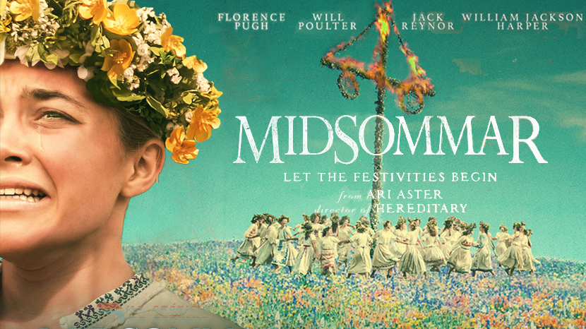

Entre flores, rituales y sonrisas forzadas, Midsommar esconde un duelo desgarrador. ¿Es un grito de ayuda o una liberación total?
Introducción: Midsommar no es una película de terror típica. No hay oscuridad. Todo es luz. Pero debajo de los campos floreados hay una historia sobre el duelo, la pérdida y el renacer… aunque sea dentro de una secta.
Después de una tragedia personal, una joven pareja viaja junto a un grupo de amigos a una remota comunidad rural en Suecia para participar en un festival tradicional que solo ocurre una vez cada 90 años. Lo que comienza como una experiencia cultural fascinante pronto se convierte en una pesadilla inquietante cuando descubren que las costumbres y rituales de la comunidad esconden secretos oscuros y perturbadores. Atrapados en un ambiente de luz constante y ceremonias inquietantes, deberán enfrentarse a la manipulación, la paranoia y el terror psicológico. Midsommar es una exploración visceral del duelo, la pertenencia y la fragilidad humana, envuelta en una atmósfera luminosa y perturbadora que redefine el horror a plena luz del día.
Su familia muere en las primeras escenas. No llora… colapsa. Su entorno no la contiene, y su pareja es emocionalmente nula. Su dolor la deja a la deriva.
La secta no salva a Dani: la destruye y reconstruye. El festival representa un duelo ritualizado, donde el dolor se transforma en aceptación forzada. Todo se ve bonito, pero nada es sano.
No es felicidad. Es alivio, locura y resignación. Dani encuentra una "familia", pero al precio de su identidad.
Midsommar es una película sobre el dolor silenciado. Un viaje perturbador donde lo luminoso esconde lo más oscuro del alma humana.